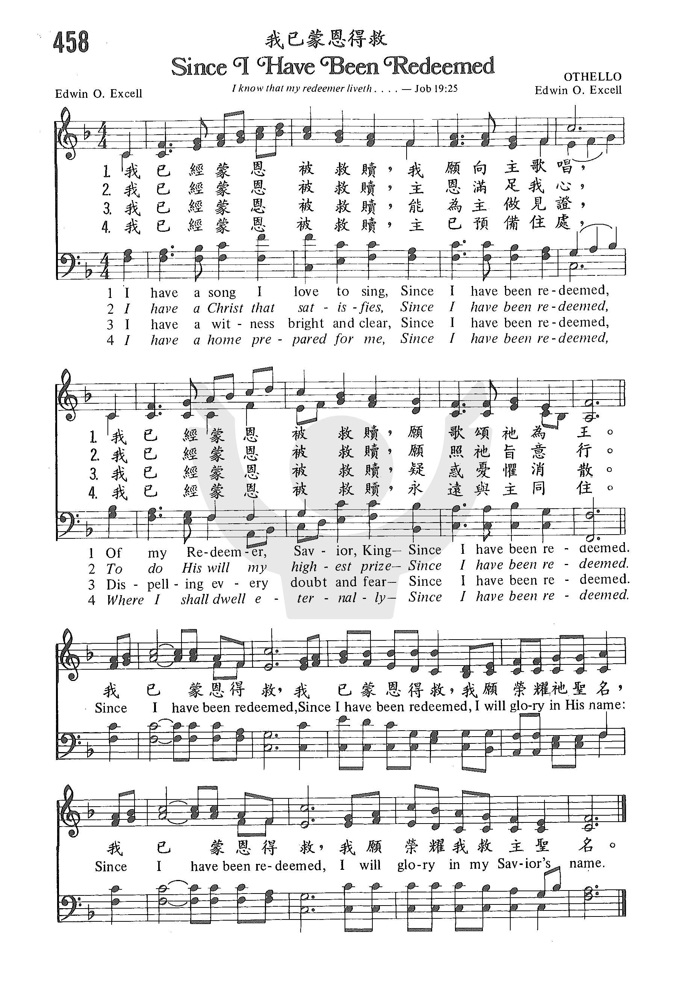
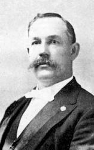

|
|
|
|
1 I have a song I love to sing,
Since I have been redeemed,
Of my Redeemer, Savior, King,
Since I have been redeemed.
Chorus:
Since I have been redeemed,
Since I have been redeemed,
I will glory in His name;
Since I have been redeemed,
I will glory in my Savior's name.
2 I have a Christ who satisfies,
Since I have been redeemed,
To do His will-- my highest prize,
Since I have been redeemed.[Chorus]
3 I have a witness bright and clear,
Since I have been redeemed,
Dispelling ev'ry doubt and fear,
Since I have been redeemed.[Chorus]
4 I have a home prepared for me,
Since I have been redeemed,
Where I shall dwell eternally,
Since I have been redeemed.[Chorus]
Source: Baptist
Hymnal 2008 #284
|
我已經蒙恩被救贖, 我願向主歌唱,
我已經蒙恩被救贖, 願歌頌祂為王。
副歌：
我已蒙恩得救,我已蒙恩得救,
我願榮耀祂聖名, 我已蒙恩得救,
我願榮耀我救主聖名。
我已經蒙恩被救贖, 主恩滿足我心,
我已經蒙恩被救贖, 願照祂旨意行。
我已經蒙恩被救贖, 能爲主做見證 ,
我已經蒙恩被救贖, 疑惑憂懼消散 。
我已經蒙恩被救贖, 主已 預散住處
我已經蒙恩被救贖, 永遠 與主同 住
|
|
https://www.zanmeishige.com/tab/26033.html?songbook=1&index=458
 |
|
|
|

-
教會聖詩 458 我已蒙恩得救 Since I have Been Redeemed
- Since I have been redeemed O for a thousand tongues to sing
- SINCE I HAVE BEEN REDEEMED - hymn lyric and Music.
1257
Since I Have Been Redeemed 我已蒙恩得救
|
Short Name: |
E. O. Excell |
|
Full Name: |
Excell, E. O. (Edwin Othello), 1851-1921 |
|
Birth Year: |
1851 |
|
Death Year: |
1921 |
Edwin Othello
Excel USA 1851-1921. Born at Uniontown, OH, he started
working as a bricklayer and plasterer. He loved music and went to Chicago to
study it under George Root. He married Eliza Jane “Jennie” Bell in 1871.
They had a son, William, in 1874. A member of the Methodist Episcopal
Church, he became a prominent publisher, composer, song leader, and singer
of music for church, Sunday school, and evangelistic meetings. He founded
singing schools at various locations in the country and worked with
evangelist, Sam Jones, as his song leader for two decades. He established a
music publishing house in Chicago and authored or composed over 2,000 gospel
songs. While assisting Gypsy Smith in an evangelistic campaign in
Louisville, KY, he became ill, and died in Chicago, IL. He published 15
gospel music books between 1882-1925. He left an estate valued at $300,000.
John Perry

Tune Information
|
Title: |
OTHELLO |
|
Composer: |
E. O. Excell (1884) |
|
Meter: |
8.6.8.6 with refrain |
|
Incipit: |
51234 56543 13321 |
|
Key: |
F
Major |
|
Source: |
Echoes of Eden for the Sunday School (Chicago,
Illinois: 1884), alt. |
|
Copyright: |
Public Domain |
From Wikipedia, the free encyclopedia
Jump to navigationJump
to search
|
Prof. E. O. Excell
|

by Collins of New York, circa 1890
|
|
Born |
December 13, 1851
|
|
Died |
June 10, 1921 (aged 69)
Wesley Hospital, Chicago, Illinois
|
|
Resting place |
Oak Woods Cemetery, Chicago |
|
Education |
Studied music under George
F. and Frederick W. Root |
|
Occupation |
Music Publisher
composer
Chorister
Vocalist |
|
Employer |
E. O. Excell (Company) |
|
Known for |
Leading American hymnbook publisher, Arrangement of Amazing
Grace, Gospel songs Count your
blessings and I'll
Be a Sunbeam |
|
Spouse(s) |
Eliza Jane (Bell) Excell
( m. 1871)
[1] |
|
Children |
William Alonzo |
|
Parent(s) |
J. J. Excell
Emily (Hess) Excell |
 |
Edwin Othello Excell (December
13, 1851 – June 10, 1921), commonly known as E. O.
Excell, was a prominent American publisher,
composer, song
leader, and singer of music for church, Sunday school, and evangelistic meetings
during the late nineteenth and early twentieth centuries. Some of
the significant collaborators in his vocal and publishing work
included Sam
P. Jones, William
E. Biederwolf, Gipsy
Smith, Charles
Reign Scoville, J.
Wilbur Chapman, W.
E. M. Hackleman, Charles
H. Gabriel and D.
B. Towner.
His 1909 stanza selection and
arrangement of Amazing
Grace became the most widely used and familiar
setting of that hymn by the second half of the twentieth century.[2] The
influence of his sacred music on American popular culture through revival
meetings, religious conventions, circuit
chautauquas, and church hymnals was substantial enough by the
1920s to garner a satirical reference by Sinclair
Lewis in the novel Elmer
Gantry.[3]
Excell compiled or contributed to
about ninety secular and sacred song
books and is estimated to have written, composed, or arranged more
than two thousand of the songs he published.[4] The music
publishing business he started in 1881 and that
eventually bore his name was the highest volume producer of
hymnbooks in America at the time of his death.[5]
Early years[edit]
Excell was the son of German
Reformed minister and self-published author
J. J. Excell.[6] He
was born in Uniontown,
Stark County, Ohio and attended public schools in
Ohio and Pennsylvania. After marrying in 1871 near Brady's
Bend, Pennsylvania, he relocated to that state and supported his
family for several years as a plasterer, bricklayer,
and singing instructor.[7] His
focus was turned to sacred
music through his experience leading songs at revivals and
worship services of Methodist
Episcopal churches, first in East
Brady and then, starting in 1881, Oil
City, Pennsylvania. Between 1877 and 1883 he studied music
formally at the Normal
Musical Institutes of George
F. Root where he also received vocal training under
Root's son, Frederick. He moved to Chicago, base of Root's
operations, in 1883 to pursue music publishing in earnest.[8]
Vocalist and
song leader[edit]
Excell was described as "a big, robust
six-footer, with a six-in caliber voice"[9] and
extraordinary range that enabled him to solo as baritone or tenor.
Publisher George
H. Doran observed him leading songs at a revival
and later noted that Excell "was a master of mass control; he might
easily have become conductor of some mighty chorus".[10] These
talents fostered his early success as a rural singing teacher in
Pennsylvania and helped secure a position as church choirmaster for
the two years preceding his move to Illinois.
Two important contacts made during his
early years in Chicago were Benjamin F. Jacobs and John
H. Vincent.[11] Both
men had been heavily involved with the uniform Sunday school lesson
system established among many Protestant denominations
during the early 1870s.[12] Vincent
was also co-founder of the original Chautauqua
Assembly and involved with the burgeoning church
youth movements of the era, such as Christian
Endeavor and Epworth
Leagues. Excell assisted with the music of their Sunday school
work for at least two years and later served as music editor for
correspondence courses Vincent established through the Chautauqua
Press.[13] He
also performed as a vocalist for programs at the Chautauqua
Institution. Insights gained from these associations were
significant in that much of what Excell would later publish targeted
Sunday school and youth program music needs.
The Methodist Episcopal church of
Excell's day was still divided into northern and southern
denominations created by an antebellum split.
Excell and Vincent were affiliated with the northern branch known as
the Methodist
Episcopal Church. In 1885 he met Sam
P. Jones, a Georgia evangelist
of the Methodist
Episcopal Church, South, and was invited to join him as vocalist
the following year, which included a campaign in Toronto during
October 1886.[14]
Jones' musical director at that time
was Marcellus J. Maxwell of Oxford,
Georgia. He was also a capable singer and songwriter, though
more reserved than Excell. They became an effective musical team
known informally as "Ex and Max".[15] At
some point prior to 1895, Excell became the principal song leader
and vocalist Jones referred to as "this big-hearted, noble soul ...,
my chorister,
Brother Excell."[16] The
respect was mutual and good natured. In 1887 Excell wrote and
published a spiritualized rendition of "one of the trite sayings of
the Reverend Sam P. Jones" titled You Better Quit
Your Meanness. It was dedicated to Jones by "his Co-Worker, E.
O. Excell".[17] They
worked together throughout the United States and Canada until Jones'
death in 1906. Though their twenty-year partnership was not
exclusive, it was one of the most significant influences on Excell's
career.
While serving as Jones' chorister,
Excell became adept at crafting large volunteer choirs out of
recruits from multiple local churches that had never sung together
before. These combined revival and evangelistic meeting choirs
typically had fewer than 400 participants. However, William Shaw of Christian
Endeavor listed Excell among Ira
Sankey, Homer
Rodeheaver, and other distinguished musicians who had led choirs
in the range of one thousand to four thousand voices at their
conventions.[18]
Excell assisted a number of other
evangelists and religious conference leaders in various musical
capacities. He worked as a vocalist for William E. Biederwolf, a Presbyterian minister
active with the Winona
Lake Bible Conference and its related chautauqua,
with whom he also collaborated on a number of hymnbooks.[19] During
the final decade of his life he assisted with the music program of
British evangelist Gipsy
Smith.
Music publisher, compiler and editor[edit]
Excell compiled a collection of hymns
and gospel songs around 1880 which was published as Sacred
Echoes by John J. Hood of Philadelphia in
1881, the year he marked as his start in the business. Sing
the Gospel, published around the time of the move to Chicago,
was issued under the "E. O. Excell" imprint. Echoes
of Eden followed two years later in 1884. An
archetype of later "combined" song books was produced in 1885 when
contents of Sing the Gospel, Echoes
of Eden and limited new material were repackaged
into The Gospel in Song, a hymnbook later
advertised to contain the songs and solos sung by Excell at Sam
Jones' Gospel meetings.
Sam Jones
Influence[edit]
The working relationship initiated
with Jones in 1886 proved to be a pattern of the age. A contemporary
writer explained that prominent evangelists always "had their
leading singers, they were billed on the hoardings of
the cities after the manner of theatrical companies – Moody and Sankey; Sam
Jones and Excell; Chapman and Alexander; Torrey and Towner;
and so on."[20] The
promotional benefit for a sacred
music publisher was enormous. Excell's books were
used in Jones' revivals and the contents revised over time to suit
changing preferences and the needs of the campaigns.
Three song books aimed at different
applications were published in 1886 and 1887. All three became
series that ran through most of the years Excell was affiliated with
Jones' ministry:
- Excell's Anthems (1886)
for choirs was followed by volumes 2 through 6 and three
combined editions of which Excell's Anthems,
Vols. 5 & 6 Combined (1899) was the last.
- Excell's School Songs (1887)
for school, class, and home use was followed by numbers 2
through 4 and two combined editions ending with Excell's
School Songs, Nos. 3 & 4 Combined (1903).
- Triumphant Songs (1887)
for Sunday schools and revivals was followed by numbers 2
through 5 and two combined editions (Nos. 1 & 2 and Nos. 3 & 4).
The last book in this series was Triumphant
Songs No. 5 (1896).
Make His Praise Glorious,
published in 1900 as the Triumphant Songs series
was approaching its end, contained Excell's initial arrangement of Amazing
Grace based upon the tune New
Britain.[21] He
compiled and published at least another six song books with the E.
O. Excell imprint during his final years with Jones. Excell and his
song books received significant exposure in the majority of U.S.
states and Canadian provinces of his day during the twenty years
they worked together.[11]
Collaborations[edit]
Only about seven new song books were
published by Excell under his own imprint in the years following
Jones' death, though the annual quantity of books sold still managed
to more than double during that time. The business changed to
involve a greater number of collaborations destined for other
publishers and private
label printing of denominational hymnals. Some of
the most substantial were:
- Methodist Episcopal –
Early collaborations were established through Excell's Methodist
connections. Two hymnbooks were compiled for the Book Concerns
of the Methodist
Episcopal Church in 1897 and 1899.
Unfortunately his relationships with the publishing authorities
within this northern branch of American Methodism were
irreconcilably damaged in 1900 by the aftermath of a book
contract he allegedly negotiated directly with the General
Secretary of the Epworth
League.[22] However,
opportunities with the Methodist
Episcopal Church, South were unaffected and at
least four hymn books were produced between 1909 and 1918 with
W. C. Everett, manager of the Methodist Publishing House in Dallas,
Texas.
- Charles Reign Scoville –
At least three hymnbooks were compiled with this evangelist of
the Christian
Church and director of the Winona Assembly and
Summer School Association for his C. R. Scoville imprint between
1909 and about 1915.
- W. E. M. Hackleman –
Five or more hymn collections were produced between 1910 and
1914 with this Christian
Church musician and published by the Christian
Board of Publication or Hackleman Music Company. Hackleman also
worked on another three collections credited to Excell that were
published posthumously.
- William E. Biederwolf –
Three hymn collections and a combined edition were developed
with this Presbyterian evangelist
between 1912 and 1917 for Glad Tidings Publishing Company.
Excell had also been listed earlier as a special contributor on Hymns
of His Praise No. 2 that Biederwolf compiled in
1906 with assistance from Homer
Rodeheaver. One other hymn book, "Songs of the Evangelist"
crediting both Biederwolf and Excell as contributors, was
published posthumously in 1925.
- Hope Publishing Company – Joy
to the World was compiled in 1915 for this
publishing firm of another Chicago Methodist, Henry
S. Date. While Excell continued to publish collections under
his own imprint, he worked on another three Hope hymnbooks with
Date's successors through 1919.
- Single song book
collaborations – Excell worked on one-book
projects with a diverse number of his contemporaries. Some of
the more notable included:
The portfolios of copyrights for
contemporary songs and plates for classic hymns that Excell
accumulated as a publisher and composer also led to printing work on
denominational hymnals. He produced the 1909 edition of Spiritual
Hymns of Brethren
in Christ in which he held copyrights for about
one third of the six hundred songs selected by the hymnal committee.[23] Another
example was the original edition of Great Songs of
the Church which he produced for the Churches
of Christ in 1921.[24]
E. O. Excell
Company[edit]
Excell developed approximately fifty
song books and contributed to at least another thirty-eight over his
forty-year publishing career.[4] By
1914, his company had produced close to 10 million books and was
selling them at a rate of nearly a half million per year. Annual
output had grown to more than a million books by 1921, though with
margins at wholesale levels.[5]
Excell's only child, William Alonzo,
participated in both the musical event and publishing businesses. At
least one publication, Chorus Choir Selections (1918),[25] bore
the "E. O. Excell & Son" imprint. "E. O. Excell Company" was
utilized on publications created after the founder's death. Excell's
grandson, known as E. O. Excell, Jr, was also engaged in the family
publishing business by 1927.[26]
Lyricist, composer and arranger[edit]
Estimates of the number of songs
authored, composed, or arranged by Excell range from two to three
thousand. Two that remain well known are his 1909 arrangement of
John Newton's Amazing
Grace and the tune he composed for Johnson
Oatman's Count
Your Blessings.
Death and legacy[edit]
Excell fell ill while assisting Gipsy
Smith with a revival in Louisville,
Kentucky and returned to Chicago to be
hospitalized. He died on June 10, 1921, after more than thirty weeks
in Wesley Memorial Hospital.[27] Colleagues
at the International
Sunday School Association, where he had served for thirty-six
years, said the following of him at their next convention:[28]
Mr. Excell will be remembered
as the great song leader. Probably no man who ever lived, and
certainly in this country, was more capable than he in directing
great audiences in singing. He was large of body and happy in
his disposition. He was never known to lose his temper or his
smile in his endeavor to make the people sing.
— Herbert H. Smith,
(ed.), Organized Sunday School Work in North America,
1918–1922
At least five books listing him as a
contributor were published posthumously. One of these was The
Excell Hymnal published by his company in 1925; it
was completed by his long-time collaborators Hamp
Sewell and W. E. M. Hackleman as "a fitting climax
to its long line of illustrious predecessors".[29]
Heirs sold the large E. O. Excell
Company copyright portfolio to the Hope Publishing Company in 1931
which they combined with their prior acquisition of a former Ira
Sankey firm to create the Biglow-Main-Excell
Company. The most popular Excell compositions at the time of the
sale were I'll Be a Sunbeam and Count
Your Blessings.[7]
https://en.wikipedia.org/wiki/E._O._Excell
作者：洪順強牧師
有一些人說自己相信了耶穌後，仍然沒有得救的把握；意思說他們對自己現在是不是一個重生的基督徒及將來是否能上天堂都沒有把握，故此他們對信仰仍有很多的猶疑，甚至活在掙扎與不平安中。然而聖經說：「人有了上帝的兒子就有生命，沒有上帝的兒子就沒有生命。我將這些話寫給你們信奉上帝兒子之名的人，要叫你們知道自己有永生。」（約翰壹書5:12-13）基督徒是應該知道自己有永生得救的，我們可從以下幾點去檢查一下自己：
有否誠心認罪悔改接受耶穌為主？
要有得救的把握，您首先要誠實地問問自己是不是已誠心相信並接受耶穌基督成為自己的救主，曾經在祂面前承認自己是一個罪人，求祂赦免過去一切的罪過，願意悔改歸正，一生跟隨祂並以祂為您人生的主宰。這一點非常重要，因為聖經清楚告訴我們人是怎樣得救的；請看羅馬書10:9-10：「你若口裡認耶穌為主，心裡信上帝叫祂從死裡復活，就必得救。因為人心裡相信就可以稱義，口裡承認，就可以得救。」約翰福音1:12：「凡接待祂的，就是信祂名的人，祂就賜他們權柄作上帝的兒女。」以及約翰壹書1:9-10：「我們若認自己的罪，上帝是信實的，是公義的，必要赦免我們的罪，洗淨我們一切的不義。我們若說自己沒有犯過罪，便是以神為說謊的，祂的道也不在我們心裡了。」
按聖經的應許得救
人沒有得救的把握有可能是單憑感受，覺得自己好像還未得救；覺得自己還未做好；覺得天堂太完全太聖潔而自己是沒有資格進去的；覺得自己不比別的基督徒好；覺得自己信了主後仍然有時會犯罪；覺得自己還沒有完全明白聖經；覺得……其實要有得救的把握不是憑感覺的，乃是要按聖經的應許，相信聖經怎樣說我們便怎樣得救，以下幾處經文會幫助您-約翰福音3:16說：「上帝愛世人，甚至將祂的獨生子賜給他們，叫一切信祂的不至滅亡，反得永生。」羅馬書十章13節:「因為『凡求告主名的，就必得救。』」主耶穌說：「我實實在在的告訴你們，信的人有永生。」（約翰福音6:47
）你相信主的應許嗎？上帝是信實的，祂不會失信，故此祂應允信主的人得救就必得救。
靠主的恩典得救
還有，要知道我們一點也不能靠自己的行為去救自己，在這個世界上絕大部份的宗教都是教人靠自己的好行為去賺取救恩。試問有誰可以做到行為完全沒有一點過犯呢？因為天堂是不容人有一點兒罪惡的，而我們也知道自己過去也曾犯了不少罪，那些罪已犯過了，全知的上帝全都記錄下來，人是無法靠行善或積陰德去塗抹或抵消的。好像一個犯了罪（不論大或小，多或寡）的人，法庭判他有罪時，他不能說他將來用行善或好行為去抵消，他仍被判有罪並留下記錄
（除非他蒙赦罪之恩）。故此我們的罪既然不能靠自己去塗抹，便需要主耶穌的代贖。祂為我們受了該受的刑罰與一切痛楚，聖經說：「祂為我們的過犯受害，為我們的罪孽壓傷……，我們眾人的罪孽都歸在祂身上。」（以賽亞書53:5-6）
主耶穌就是那樣愛我們，願意拯救我們脫離將來的審判，所以我們只要相信並接受祂為救主，就得著拯救，將來不會被定罪及受罰，主耶穌釋放了我們。好像一個欠了別人很多債的人，本應因不能還債而受罰，然而有一個人出現為他還清了一切的債，那欠債的人便得著釋放。同樣我們都欠了別人及上帝很多的罪債，靠我們是洗不淨、還不清的，惟靠主耶穌得救。聖經以弗所書2:8-9：「你們得救是本乎恩，也因著信，這並不是出於自己，乃是上帝所賜的，也不是出於行為，免得有人自誇。」
感謝上帝，人領受祂白白所賜的恩典就得救。也許您跟著會問：「那豈不是不用行善、不用有好行為嗎？」不，我們每個人都仍要行善、仍要有好行為，只是我們怎樣做也達不到上天堂的標準，不能靠一些好行為得救。以下一點會說明我們的得救與好行為的關係。
新生命的印證
雅各書2:26說：「身體沒有靈魂是死的，信心沒有行為也是死的。」說明一個人是否真正信耶穌也要看他的行為。聖經說：「若有人在基督裡，他就是新造的人，舊事已過，都變成新的了。」（哥林多後書5:17）信耶穌的人生命會被改變；有人信主以後不再拜偶像了；有人信主以後不再賭搏了；有人信主以後不再說謊了；有人信主以後不再講污言穢語了……；信主後總有改變，至少他的心思意念變了；以前不認主耶穌為救主，現在公開承認自己是信耶穌的；以前的人生價值只為金錢物質，現在為的是永恆；以前內心充滿不平安、不快樂與憎恨，現在內心有平安、快樂與愛；以前不愛主耶穌不愛讀經，現在愛主及祂的話語等。那些改變是因信主後所產生的結果，故此好行為是新生命的印證。
那麼您有改變嗎？或許你說：變是變了，但仍然是不完全，仍然有時會犯錯甚至會犯罪，那仍然得救嗎？原來信主後人不會立刻變為完全，聖經提醒我們要繼續努力靠主去過一個得勝的生活，向著完全的目標去追求。只要我們堅信主耶穌為救主，雖然是不完全但仍是得救的，因為成為上帝的兒女，是與天父建立的一個永恆關係。
得救的人有聖靈的內住
最後，基督徒是可以根據在他裡面有沒有聖靈（上帝的靈）去確定他的得救。上帝應許信主的人有聖靈的內住。請看以下經文：約翰福音14:16-17，主耶穌說：「我要求父，就另外賜給你們一位保惠師，叫祂永遠與你們同在，就是真理的聖靈，乃世人不能接受的，因為不見祂，也不認識祂，你們卻認識祂，因祂常與你們同在，也要在你們裡面」；羅馬書5:1、5：「我們既因信稱義，就藉著我們的主耶穌基督，得與上帝相和……盼望不至於羞恥，因為所賜給我們的聖靈，將上帝的愛澆灌在我們心裡」；及羅馬書8:14-16：「因為凡被上帝的靈引導的，都是上帝的兒子。你們所受的不是奴僕的心，仍舊害怕，所受的乃是兒子的心，因此我們呼叫『阿爸、父』。聖靈與我們的心同證我們是上帝的兒女。」
基督徒怎樣知道有聖靈在他裡頭呢？只要問一問自己以下幾個問題便知道了：自己有沒有在禱告中稱上帝為天父，承認天父是自己的屬靈爸爸呢？當自己犯罪後有沒有感到是得罪上帝呢？有沒有向上帝認罪悔改呢？有沒有認耶穌基督為主？自己願意為主作見証嗎？自己有沒有公開承認是基督徒呢？若果您對以上問題的答覆是正面的話，相信聖靈已經在您裡面了！
親愛的朋友，你得救了嗎？如果還沒有，請快快接受主耶穌基督的救恩，按著《真理報》上的決志禱告去接受相信主耶穌，並跟隨主到教會去認識真理，學習愛的事奉及為主作見證。
https://www.torontostm.com/2021/03/04/%E5%A6%82%E4%BD%95%E7%9F%A5%E9%81%93%E8%87%AA%E5%B7%B1%E8%92%99%E6%81%A9%E5%BE%97%E6%95%91%EF%BC%9F/
“SINCE I HAVE BEEN REDEEMED”
“O give thanks unto the Lord, for He is good: For His mercy endureth for-ever.
Let the redeemed of the Lord say so….” (Ps. 107:1-2)
INTRO.:
A song which speaks of the many wonderful blessings for which those who are the
redeemed of the Lord can give thanks to Him is “Since I Have Been Redeemed”
(#548 in Hymns
for Worship Revised). The text was written and the tune (Othello) was
composed both by Edwin Othello Excell, who was born at Uniontown in Stark
County, OH, near Canton, on Dec. 13, 1851, the son of a German Reformed Church
minister named J. J. Excell. After his early education in the public
schools of Ohio, he married in 1871 near Brady’s Bend, PA, relocated to that
state, and supported his family by working for twelve years as a plasterer and
bricklayer, during which time starting at the age of twenty he began to conduct
country singing schools and became a popular teacher. From 1877 to 1883,
he attended normal music schools conducted by Frederick W. Root and his father,
hymn writer George F. Root.
Following his move to Chicago, IL, in 1883, the “E. O. Excell Co.” music
publishing business was started with Sing
the Gospel, and Excell began the publication of gospel songbooks which were
widely used. Also he was active in Sunday school work, leading the singing
at Sunday school conventions and, with Methodist bishop John H. Vincent, helping
to found the International Sunday School Lessons. His powerful voice and
talent as a congregational song leader were quite famous, and for twenty years
he assisted Southern evangelist Sam P. Jones in his revival campaigns. In
all, Excell produced more than 3,000 gospel songs and edited about fifty
songbooks. Probably his best known melody is found with Johnson Oatman’s
“Count Your Blessings,” but he also provided the tunes for Jonathan B.
Atchinson’s “Let Him In” and the well-known children’s song “I’ll Be a Sunbeam,”
and was responsible for the modern arrangement and harmonization of John
Newton’s “Amazing Grace.”
“Since I Have Been Redeemed” first appeared in Excell’s 1884 book Echoes
of Eden for the Sunday School, which he compiled in Chicago. In
addition, Excell published some 38 compilations for other individuals. He
provided the plates and did printing and binding in the early songbook ventures
of Robert Coleman, a prominent Baptist musician, and was the original printer of Great
Songs of the Church in 1921 for Elmer L. Jorgenson who was
associated with churches of Christ. Later in 1921, Excell fell ill while
assisting Gipsy Smith with a city-wide revival crusade in Louisville, KY, and
returned to Chicago to be hospitalized. He died on June 10, 1921, after more
than thirty weeks in Wesley Memorial Hospital. At the time of his death,
the firm which bore his name was the highest volume producer of hymnbooks in
America. His heirs sold the large E. O. Excell Co. copyright portfolio to the
Hope Publishing Company in 1931.
Among hymn books published by members of the Lord’s church for use in churches
of Christ, “Since I Have Been Redeemed” has appeared in the 1971 Songs
of the Church, the 1990 Songs
of the Church 21st C.
Ed., and the 1994 Songs
of Faith and Praise all edited by Alton H. Howard; the
1978/1983 Church
Gospel Songs and Hymns edited by V. E. Howard; the 1992 Praise
for the Lord edited by John P. Wiegand; the 2007 Sacred
Songs of the Church edited by William D. Jeffcoat; the 2009 Favorite
Songs of the Church and the 2010 Songs
for Worship and Praise both edited by Robert J. Taylor Jr.;
and the 2012 Psalms,
Hymns, and Spiritual Songs edited by Steve Wolfgang et. al.;
in addition to Hymns
for Worship.
The song specifies a number of spiritual blessings that being redeemed in Christ
brings to us.
I. According to stanza 1, the redeemed have a song to sing
I have a song I love to sing,
Since I have been redeemed,
Of my Redeemer, Savior, King,
Since I have been redeemed.
-
When a person is redeemed, God puts a new song in his mouth: Ps. 40:1-3
-
This song is about our Savior: Lk. 2:11
-
Its purpose is to give praise to Him who is our King: Rev. 19:16
II. According to stanza 2, the redeemed have a Christ who satisfies
I have a Christ who satisfies
Since I have been redeemed,
To do His will my highest prize,
Since I have been redeemed.
-
Those who are redeemed accept Christ as their Savior by obeying Him: Acts
2:36-38
-
But even after making Him our Savior, we must continue to do His will: Matt.
7:21
-
By making this our highest prize here, we can gain the eternal prize: Phil.
2:13-14
III. According to stanza 3 (not in HFWR),
the redeemed have a witness bright and clear
I have a witness bright and clear,
Since I have been redeemed,
Dispelling every doubt and fear,
Since I have been redeemed.
-
This is not the idea of our “witnessing for Jesus,” as only the apostles
could truly be witnesses of Him: Acts 1:8 (cf. v. 2), 21-22
-
Nor is it referring to some kind of direct witness of God to us, since He
has already born witness to His inspired messengers: Heb. 2:3-4
-
Rather, it is the witness that God gives to us in the Scriptures to dispel
doubt and fear: 1 Jn. 5:9-10
IV. According to stanza 4 (also not in HFWR),
the redeemed have a joy that is inexpressible
I have a joy I can’t express,
Since I have been redeemed,
All through His blood and righteousness,
Since I have been redeemed.
-
Christians can rejoice in the Lord: Phil. 4:4
-
Peter says that in a sense this joy is “unspeakable” (KJV): 1 Pet. 1:9
-
This joy is the result of the redemption that is available by His blood:
Eph. 1:7
V. According to stanza 5 (#3 in HFWR),
the redeemed have a home prepared in heaven
I have a home prepared for me,
Since I have been redeemed,
Where I shall dwell eternally,
Since I have been redeemed.
-
From the foundation of the world, God has prepared a kingdom for those who
come to Him for redemption: Matt. 25:34
-
As a result, Jesus is now in heaven preparing a home for His people: Jn.
14:1-3
-
The redeemed will dwell there eternally because it is a place of eternal
life: Mk. 10:29-30
CONCL.: The chorus then captures the feeling of happiness on the part of
one who is redeemed
Since I have been redeemed,
Since I have been redeemed,
I will glory in His Name,
Since I have been redeemed,
I will glory in my Savior’s Name.
What a wonderful life of peace and joy I can have “Since I Have Been Redeemed”!
https://hymnstudiesblog.wordpress.com/2017/04/17/since-i-have-been-redeemed/
Words: Edwin Othello Excell (b. Dec. 13, 1851; d. June 10, 1921)
Music: Edwin Othello Excell
Links:
Wordwise Hymns
The Cyber Hymnal
Note: The Cyber Hymnal gives all five stanzas of this hymn, but hymn books
rarely do, perhaps because of space. CH-5 works better as the second to last
stanza, since CH-4 is about our heavenly home.
This is a very repetitious gospel song, with the phrase, “since I have been
redeemed,” repeated some thirteen times! However, it makes good points along the
way, and perhaps the phrase bears repeating. It marks a major turning point in
anyone’s life. When the sinner puts his faith in Christ, one who was once dead
is made alive (Eph. 2:1). He becomes a new creation, spiritually (II Cor. 5:17),
and his spiritual night has turned to spiritual day (Eph. 5:8; cf. Acts
26:17-18).
These and many other dramatic changes take place when a person experiences the
salvation of God. Mr. Excell notes a number of them in his song, and it’s no
wonder he’s determined to “glory in the Saviour’s name.”
CH-1) I have a song I love to sing,
Since I have been redeemed,
Of my Redeemer, Saviour king,
Since I have been redeemed.
Since I have been redeemed,
Since I have been redeemed,
I will glory in His name,
Since I have been redeemed,
I will glory in the Saviour’s name.
We have a new song to sing (CH-1). “He also brought me up out of a horrible pit,
out of the miry clay, and set my feet upon a rock, and established my steps. He
has put a new song in my mouth–praise to our God; many will see it and fear, and
will trust in the LORD” (Ps. 40:2-3; cf. Rev. 5:9; 14:3). And (CH-2) we have a
sense of satisfaction in Him that the world could never give. “He satisfies the
longing soul, and fills the hungry soul with goodness” (Ps. 107:9; cf. Prov.
19:23).
We have a fresh motivation to live for the Lord and serve Him (CH-2). And we
have the witness of the Holy Spirit within that we belong to the Lord (CH-3).
I’m sure this is what Edwin Excell means by “I have a witness bright and clear,
since I have been redeemed.” He’s not likely speaking of his own testimony but
that of the indwelling Spirit of God. “The Spirit Himself bears witness with our
spirit that we are children of God, and if children, then heirs–heirs of God and
joint heirs with Christ” (Rom. 8:16-17).
We have a spiritual joy that is indescribable, through Christ (CH-5), “whom
having not seen you love. Though now you do not see Him, yet believing, you
rejoice with joy inexpressible and full of glory” (I Pet. 1:8). “Rejoice in the
Lord always. Again I will say, rejoice!” (Phil. 4:4). And (CH-4), one day we
shall see Him, and live with Christ forever in the heavenly home He’s prepared
for us (Jn. 14:2-3).
CH-4) I have a home prepared for me,
Since I have been redeemed,
Where I shall dwell eternally,
Since I have been redeemed.
Questions:
1) What changes can you bear witness to in your own life, since you became a
Christian?
2) What are some ways we can “glory in the Saviour’s name,” both among the
people of God, and out in the world?
Links:
Wordwise Hymns
The Cyber Hymnal
https://wordwisehymns.com/2011/11/16/since-i-have-been-redeemed/


{kind=link}